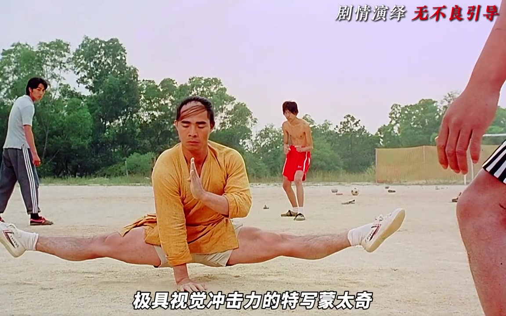
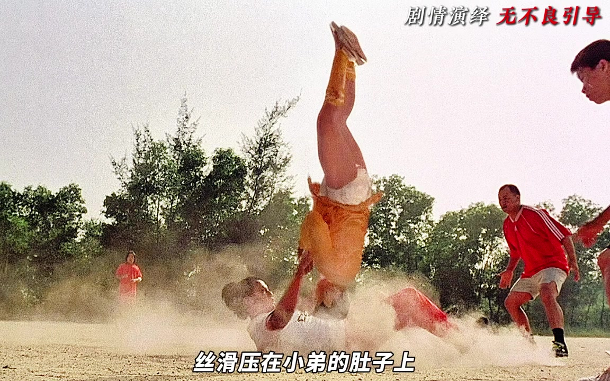
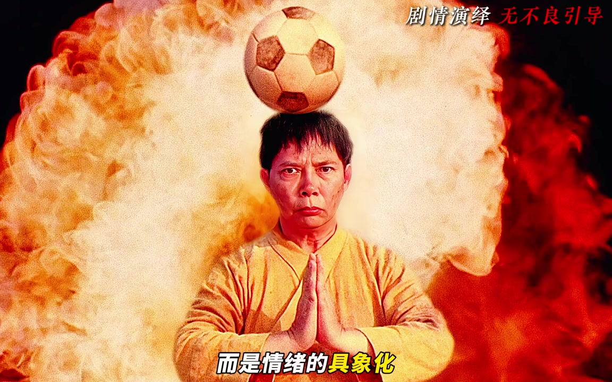
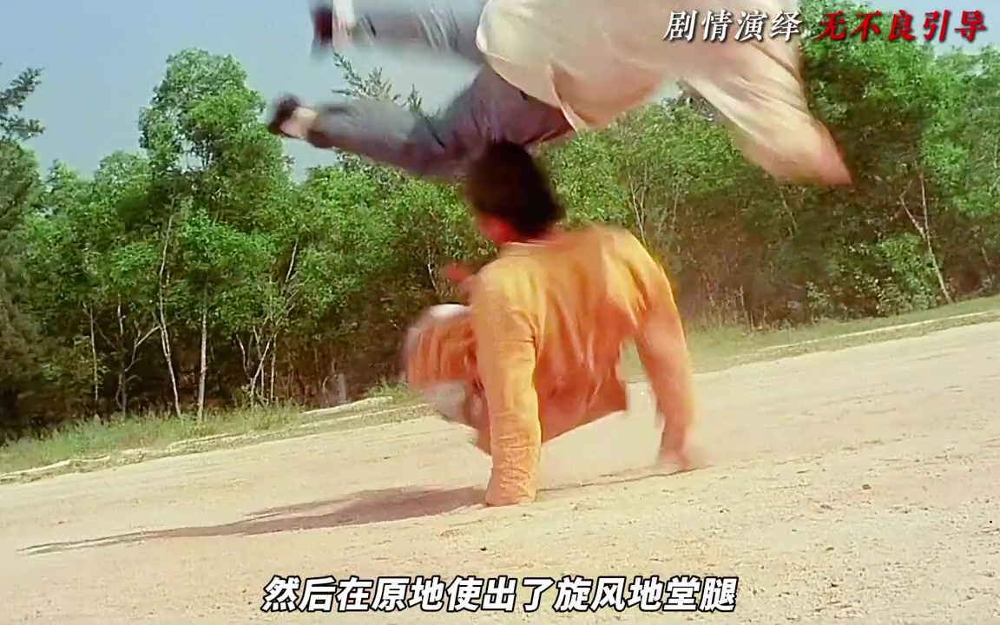
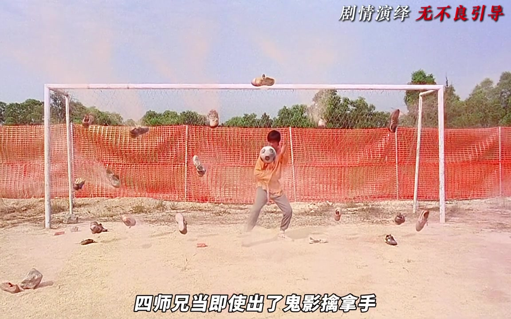
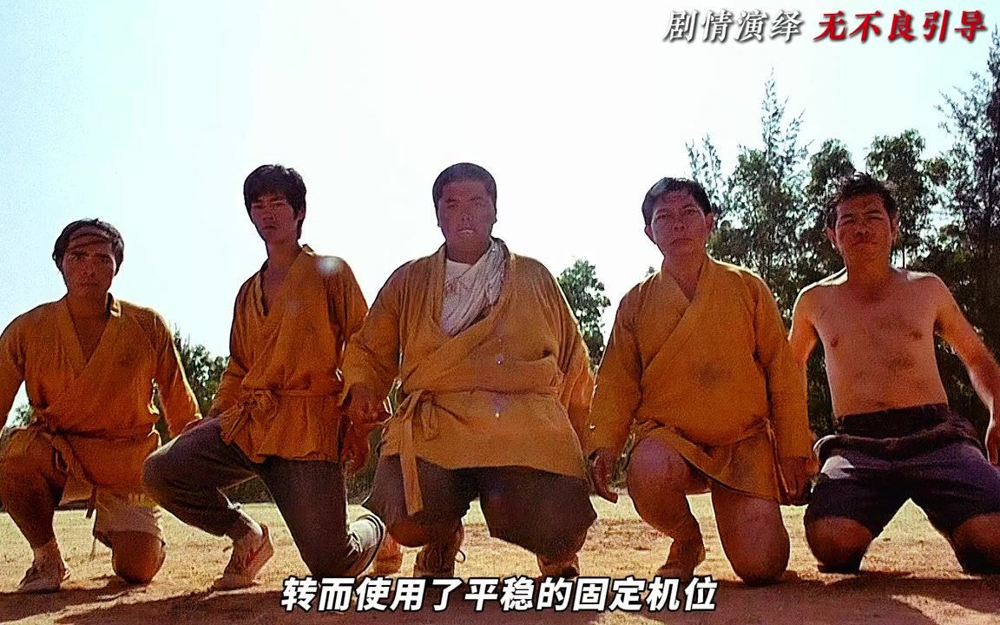
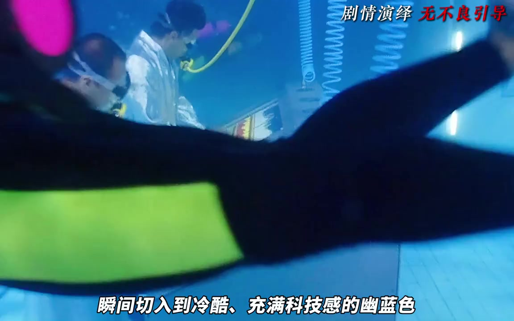
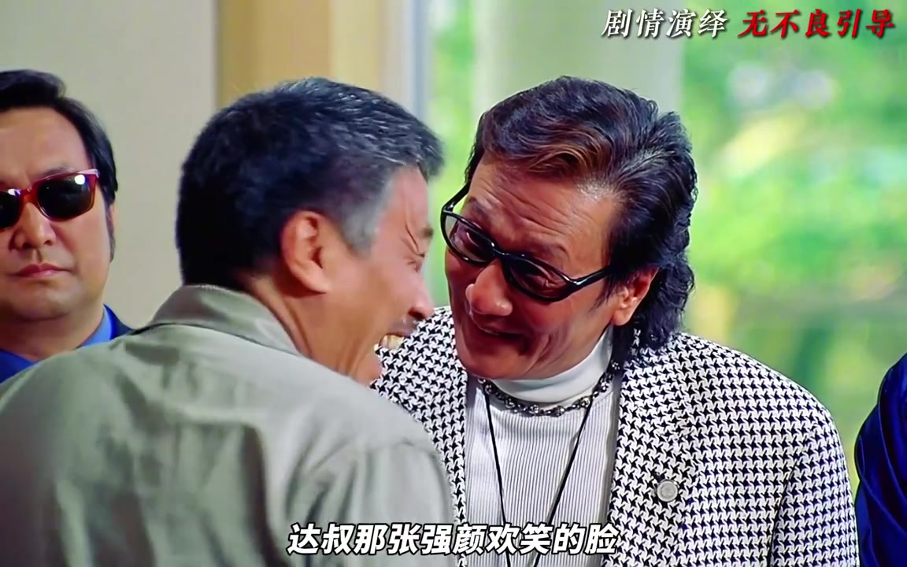

不解释，先让师兄弟摆出招式
五月说剧开场追问：为什么周星驰的喜剧总能在最荒诞的时刻击中观众，还能让人热血沸腾？答案被他压成一句“很简单”，随后切入《少林足球》少林队觉醒段落——导演没有旁白解释，而是用一组特写蒙太奇让师兄弟依次摆出各自的战斗姿势。

画面依次点出大师兄铁头功、二师兄旋风地堂腿、六师弟轻功水上漂、三师兄铁布衫、四师兄鬼影擒拿手，以及阿星的大力金刚腿。缓慢摇镜配上逐渐昂扬的配乐，把“耍帅”抬成张力积累。视频把这称作高级的视听留白：信息不靠解说补齐，而靠姿态与节奏让观众自己接住。
说明：页面叙述依据可见字幕校正术语；文末转录区仍原样保留 Whisper 识别结果。
教科书级动作设计：不是互殴，是踢球
修理队扑上来时，镜头没有走传统全景互殴，而是把武术动作与足球元素拧在一起。低机位仰拍里，大师兄头朝下、身体几乎垂直，丝滑压在对手肚子上——反常规物理姿态既让对方动弹不得，也制造荒诞压迫感。

紧接着前翻两周，足球被稳稳顶到头顶。背景燃起一团火，视频强调：CG 不是炫技，而是情绪的具象化——那团火是压抑多年后爆发的生命力。

师兄弟一个接一个把球传成绝技秀
二师兄接球前一秒睁眼——微表情被说成武侠片起手式——随后原地使出旋风地堂腿，扬尘与高速旋转身体构成视觉奇观。球踢向空中后，六师弟从入定中苏醒，拖着约三百斤的身体冲向足球，在升格镜头与威亚配合下缓缓起飞：沉重肉体对上轻盈滞空，本身就是物理学笑话。

三师兄用肚皮“吸住”足球，硬扛连环重击；夸张闷响、金属敲打声和弯曲板子的特写，都被归入漫画式夸张，用来放大铁布衫防御力。肚皮发球撞飞混混后，四师兄接住飞来的足球。面对铺面而来的臭鞋，他使出鬼影擒拿手——多重曝光、残影特效，加上动作节奏上对李小龙的致敬。

镜头回到阿星：鞋子也能当炮弹
焦点终于回到绝对主角。热身后，阿星连球带鞋踢飞出去；主观视角镜头强调大力金刚腿的爆发力，鞋子砸倒对手，摧枯拉朽的画面释放观众积压已久的情绪。整段接力至此完成一次高潮收束。
神圣仪式感刚立起来，就被台词撕开
激烈运动镜头突然换成平稳固定机位。少林队员对称蹲姿面向镜头，构图建立神圣仪式感；达叔一句刺破气氛的台词立刻把神圣感打翻。视频说，这种情绪急转弯正是星爷喜剧的独特配方。

见识到少林队潜力后，修理队球员恳求加入。起承转合走完，达叔终于拥有自己的足球队——升级完成，对立面马上要登场。
暖黄切幽蓝：用视觉奇观建立更强对手
画面色调从少林队温暖、尘土气的暖黄，瞬间切入冷酷科技感的幽蓝。强雄在水下给魔鬼队做实验，训练仪器沉在阻力巨大的环境中。视频追问：为什么要水下训练？因为若在阻力里仍能爆出非人威力，比任何台词都更能展示恐怖。

“魔鬼队拿世界冠军是早晚的事”被读作反派自白，也是抛给观众的麦高芬：少林武术真的能打败现代科技吗？悬念就此埋下。强雄得知达叔要报名全国足球超级杯，两条线索重新交汇。
报名窗口：武功恢复了，也得先叫一声“雄哥”
视频把接下来的报名戏称为“极其精彩的权力空间调度”。达叔想带队参赛，对方先说公开赛人人都有权，马上又改口：自己是委员会主席，“我说有权你才有权”。

达叔强颜欢笑的脸在特写下显得心酸。叙述者总结：导演用最克制的镜头展现最残酷的社会法则——在绝对权力面前，哪怕刚刚恢复绝世武功，也得先学会低头叫一声“雄哥”。创作者以“我是五月说剧，我们下期再见”收束。